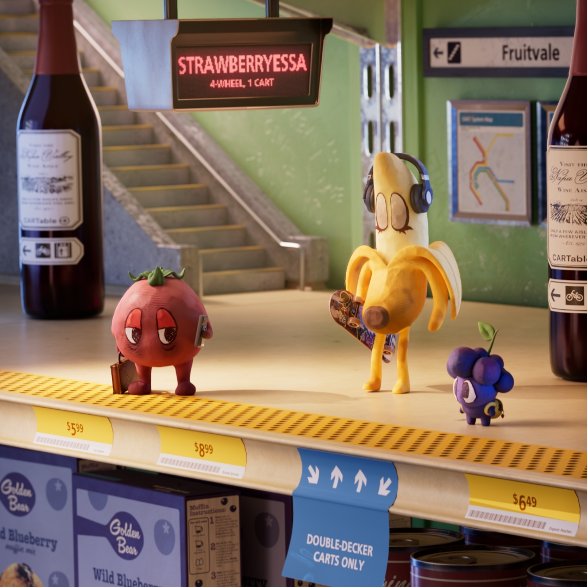
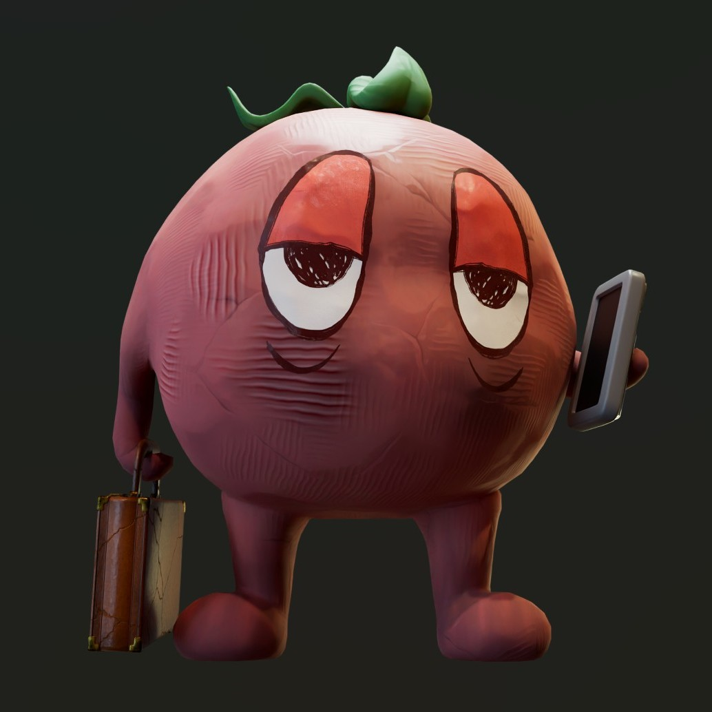
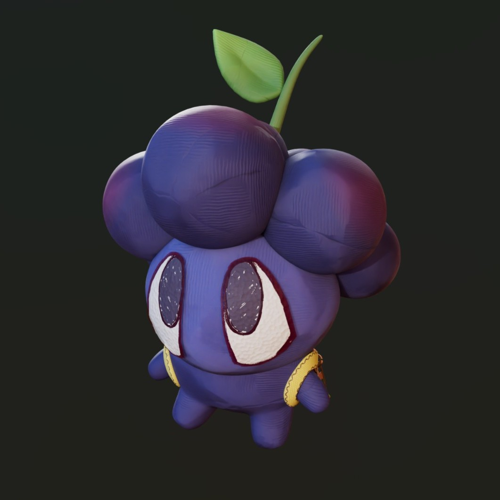
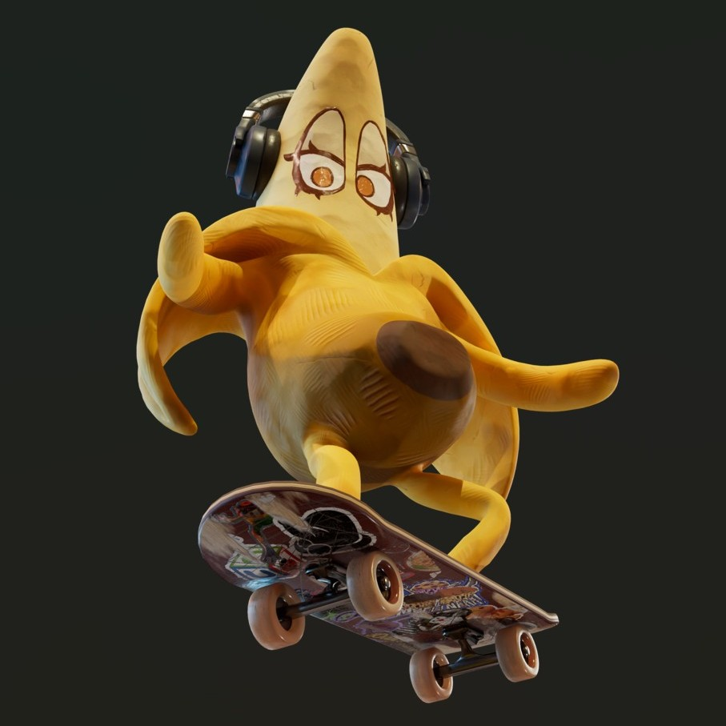
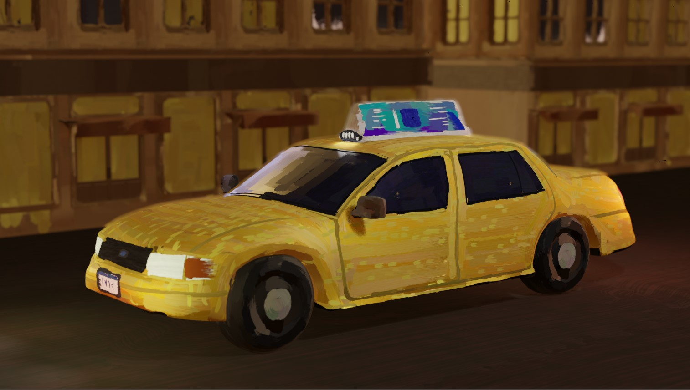
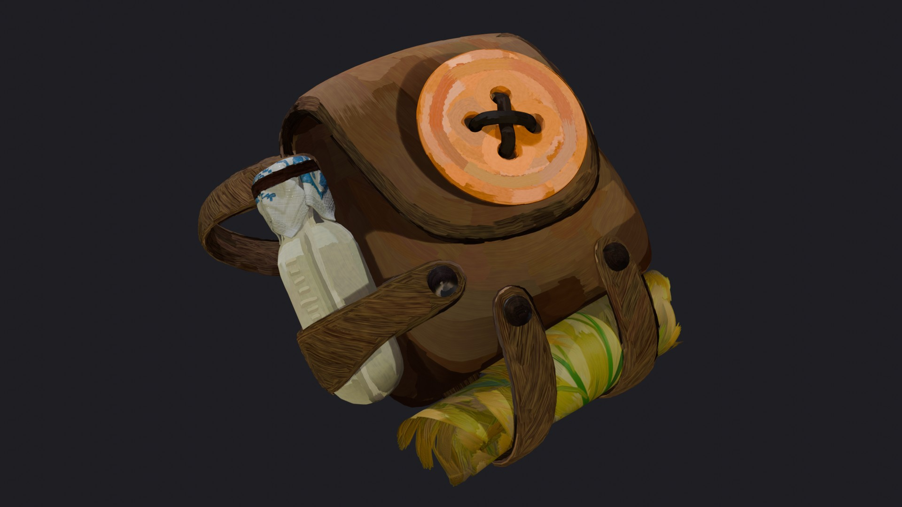
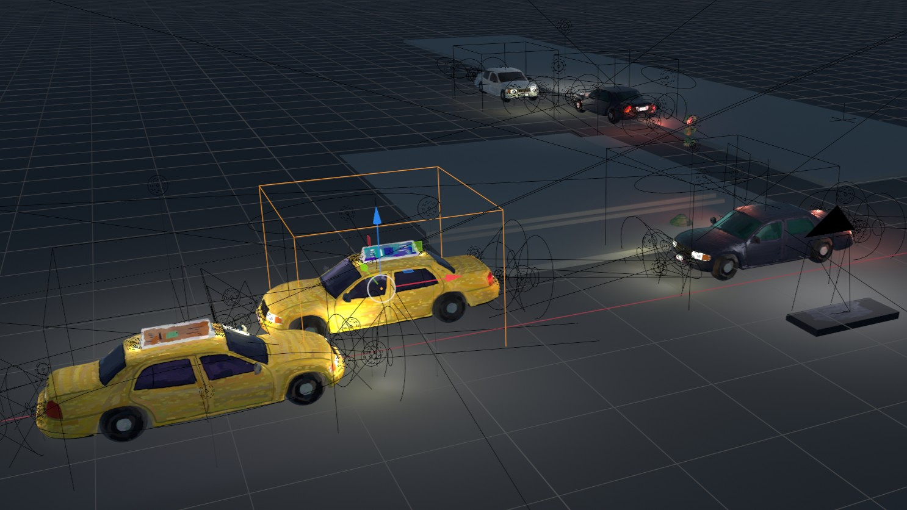
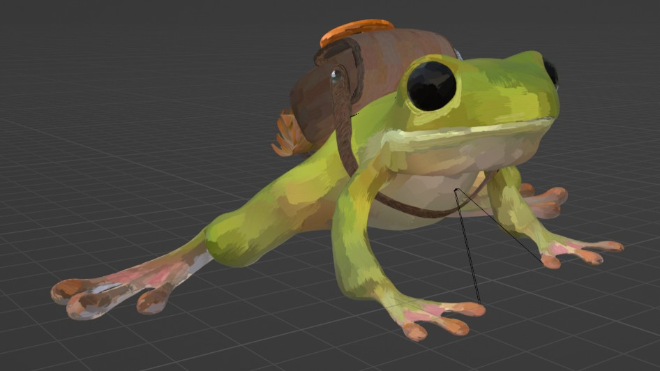

Studio Moles
Strawberryessa (2026)

Animated short inspired by BART commuters around the San Francisco Bay Area! I developed and applied the procedural clay material used for all three characters. I also modeled and animated Bobbie the Blackberry, rigged Chico the Banana, and provided creative input and technical support throughout the production process.
Bobbie Saves BART! - Behind the Scenes (2026)



A Great Leap Toward the Future (2025)
For my first project working with Studio Moles, I developed a curve-driven brush stroke shading workflow, enabling a unique painterly visual style. I also modeled, shaded, and animated key assets, including the taxis and a backpack, and I recorded my cover of the Supertramp song "School" as background music!



